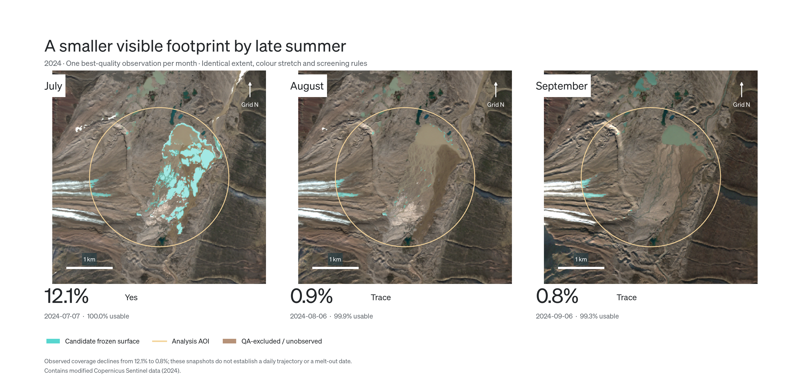
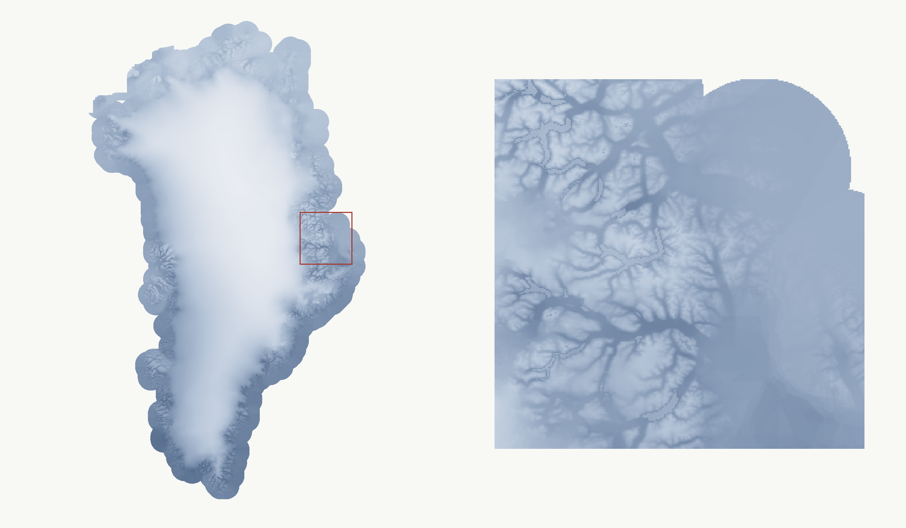
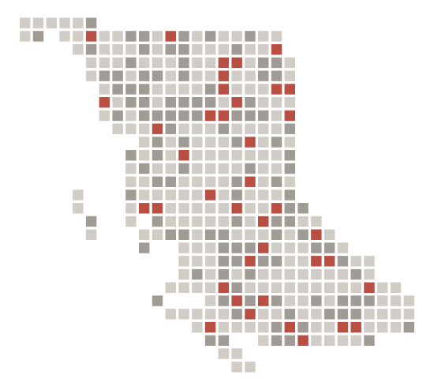

Reading a short Arctic summer
Eight summers of Sentinel-2 imagery, screened for cloud and shadow, classified and compared through quality-selected observations.
View projectPublic satellite data / Earth Engine processing / Explicit QA

Eight summers of Sentinel-2 imagery, screened for cloud and shadow, classified and compared through quality-selected observations.
View projectPublic satellite data / Earth Engine processing / Explicit QA

From Greenland-wide climate rasters to validated local temperature projections across three emissions pathways.
View projectDirect model output / 2050 annual mean
A satellite-data pipeline demo spanning acquisition, wrangling and time-series visualization, with supplementary Randolph Glacier Inventory outlines.
View projectWorkflow demo / Exploratory LOS time series
Quantifying glacier mass change from repeat LiDAR rasters, with density conversion, uncertainty assessment and a spatial survey of summer cloud cover.
View projectReconstructed visual / analytical method

Turning cleaned asset layers into exposed and non-exposed summaries on a 2.5 km grid.
View projectIndependent visual / original pipeline logic
Project pages distinguish analytical work, direct model output and reconstructed visuals.